Лабораторная работа №9
Операционные системы
Николаева А. Б.
Российский университет дружбы народов, Москва, Россия
15 июня 2026
Информация
Докладчик
- Николаева Ангелина Борисовна
- Студентка НКАбд-04-25
- Российский университет дружбы народов
- [1032253612@rudn.ru]

Цель работы
- освоение основных возможностей командной оболочки Midnight Commander
- приобретение навыков практической работы по просмотру каталогов и файлов; манипуляций с ними
Выполнение лабораторной работы
- Изучим информацию о mc при помощи справки man. Воспользуемся справкой и узнаем что для того чтобы войти в командную оболочку мы должны ввести в командной строке mc.
- Запустим из командной строки mc.
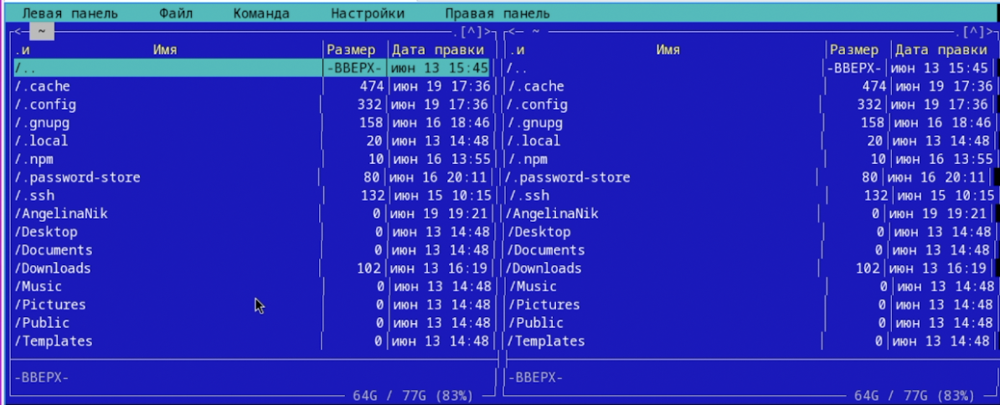
- Выполните несколько операций в mc, используя управляющие клавиши
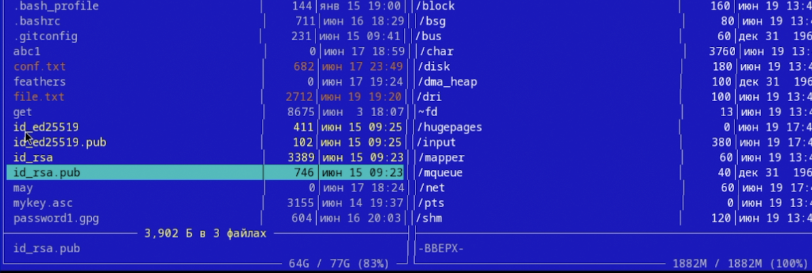
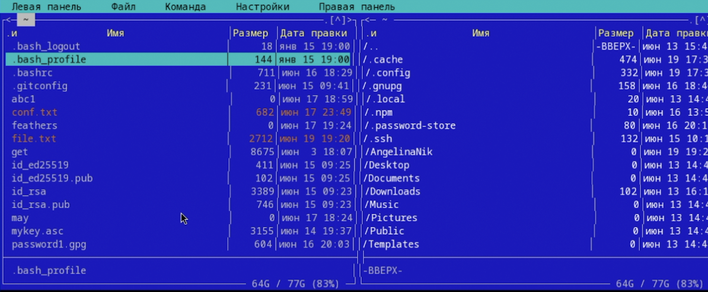
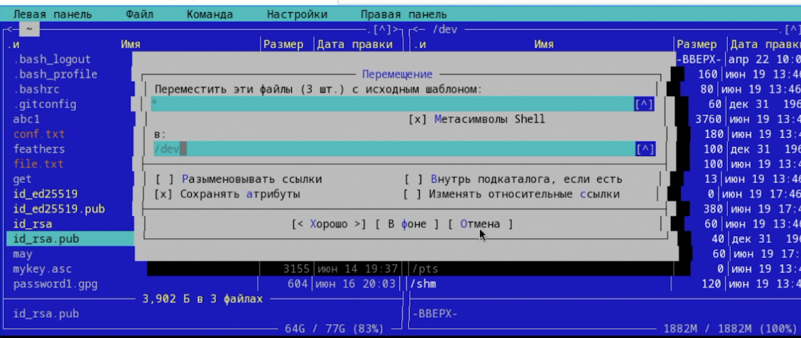
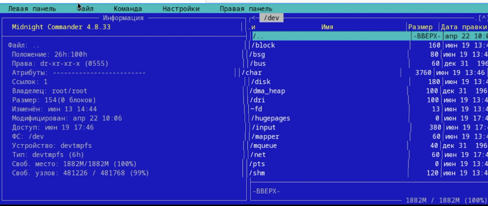
- Выполните основные команды меню левой панели.
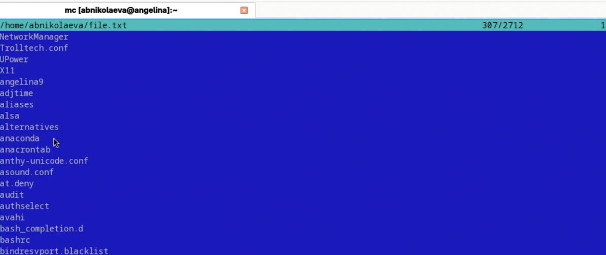
- Используя возможности подменю Файл , выполним:
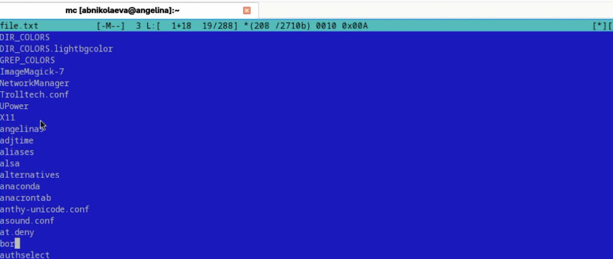
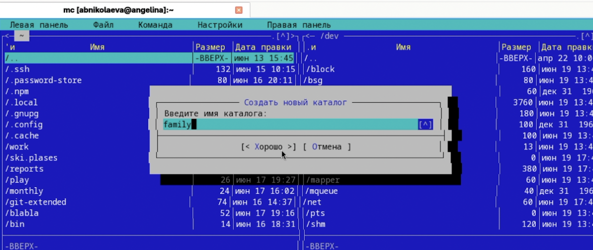
- С помощью соответствующих средств подменю Команда осуществите:
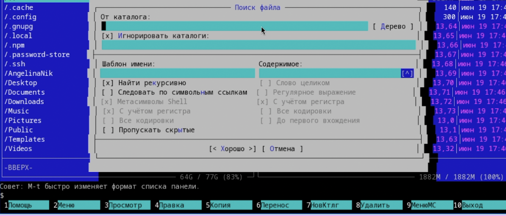
- Вызовем подменю Настройки. Изучим опции
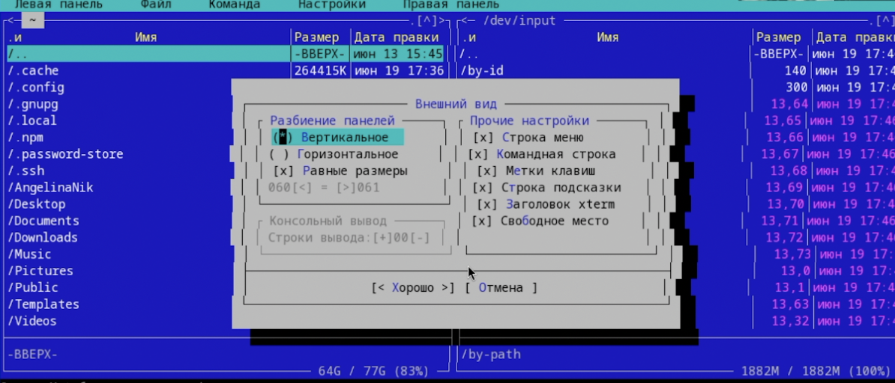
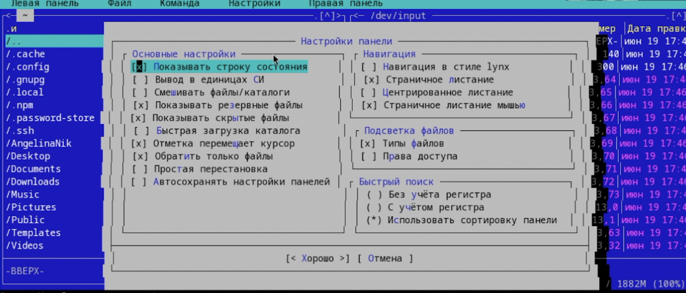
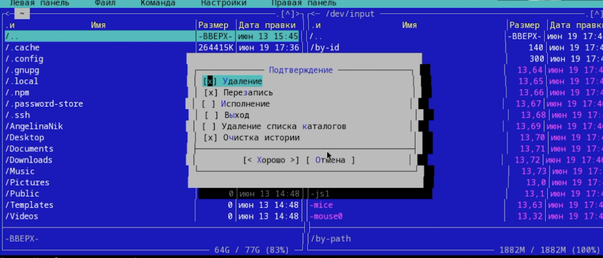
Создадим текстовой файл text.txt.
Откроем этот файл с помощью встроенного в mc редактора, и вставим в открытый файл небольшой фрагмент текста, скопированный из любого другого файла или Интернета.
- Проделаем с текстом следующие манипуляции, используя горячие клавиши:
Удалим строку текста. - F8
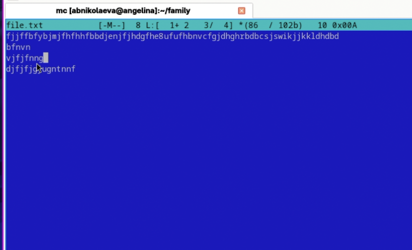
Выделим фрагмент текста и скопируйте его на новую строку. - F5
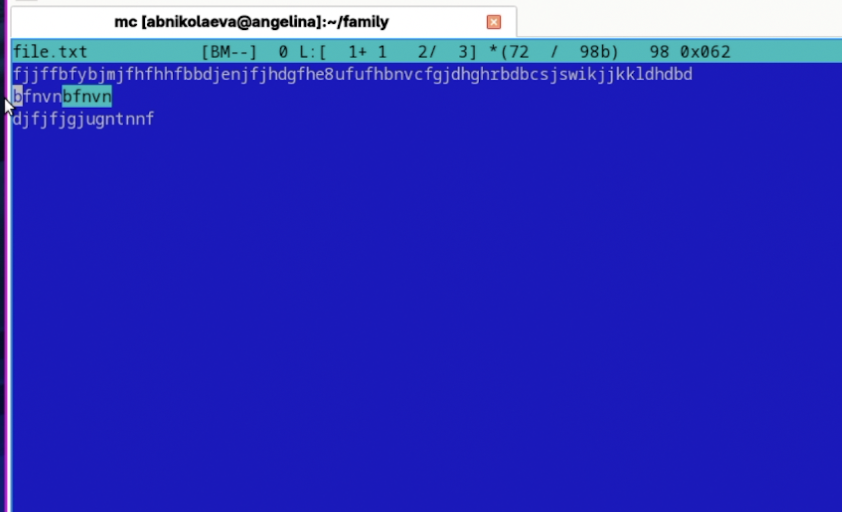
Сохраним файл. - F2
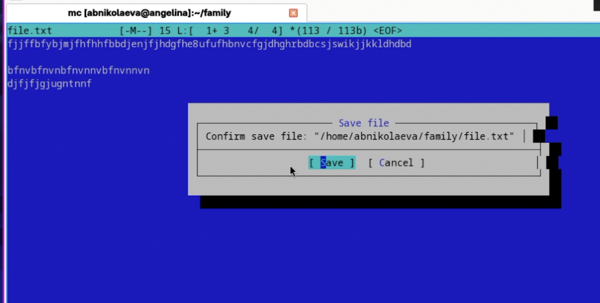
- Откроем файл с исходным текстом на языке программирования C
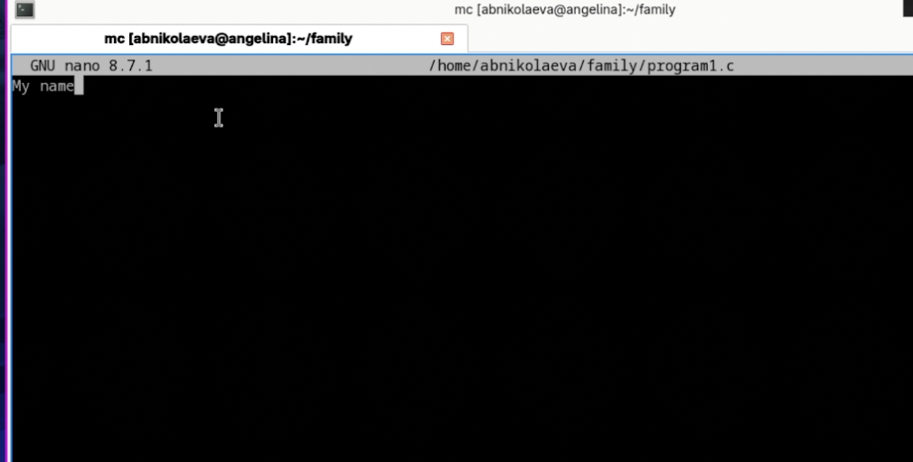
- Используя меню редактора, выключим подсветку синтаксиса.
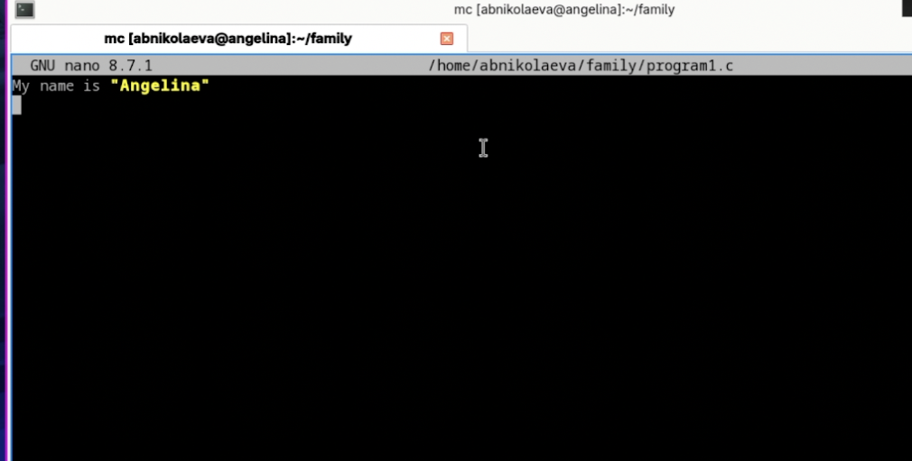
Вывод
В данной работе мы ознакомились с инструментами командной оболочки Midnight Commander. Приобрели навыки практической работы по просмотру каталогов и файлов